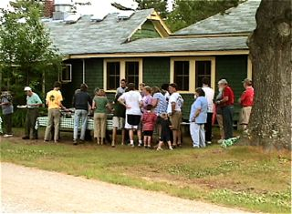

Photos of CRC Barbecues
Waiting for the horn for dinner (G. Crane) |
Fresh baked bread for dinner (J. DiCarlo) |
Waiting for the BBQ line to open (B. Crane) |

The salad table line (B. Crane) |
Getting grilled meat or fish (B. Crane) |
 Toasting marshmallows for dessert (B. Crane)
Toasting marshmallows for dessert (B. Crane) |